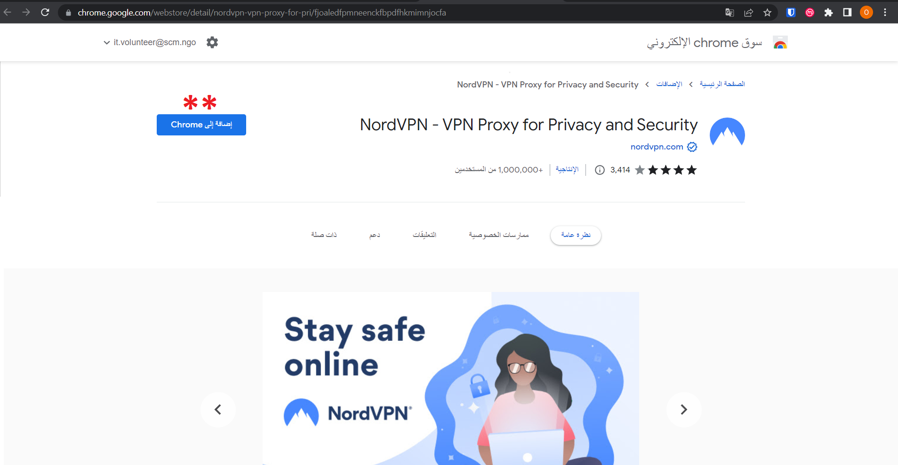
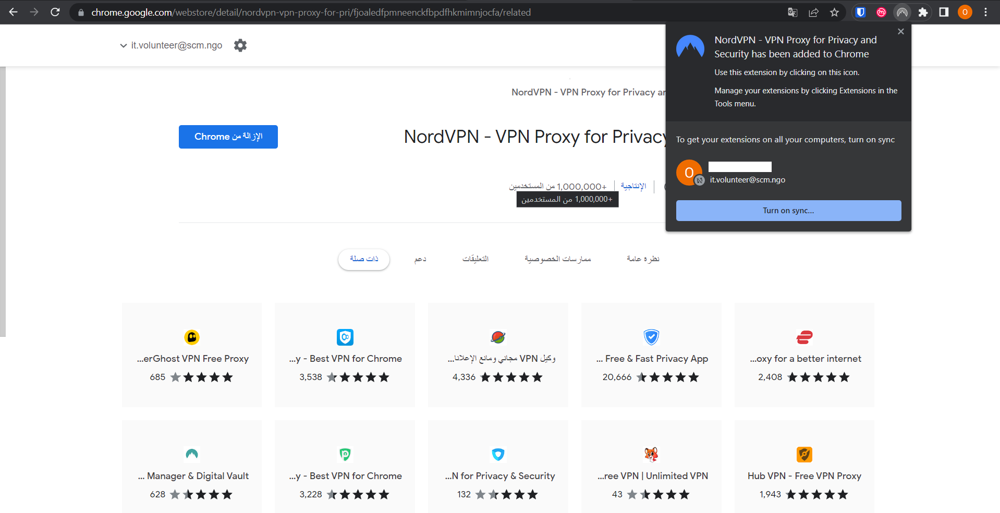
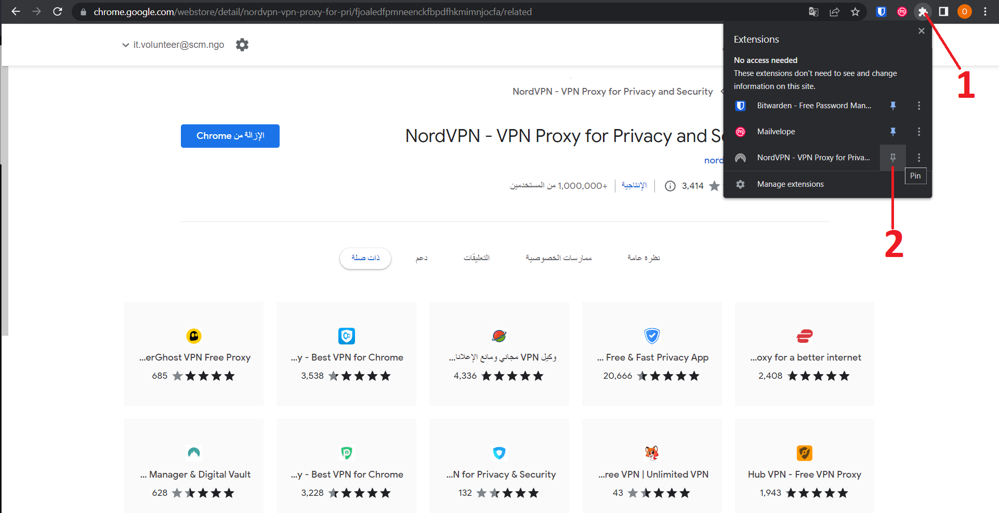
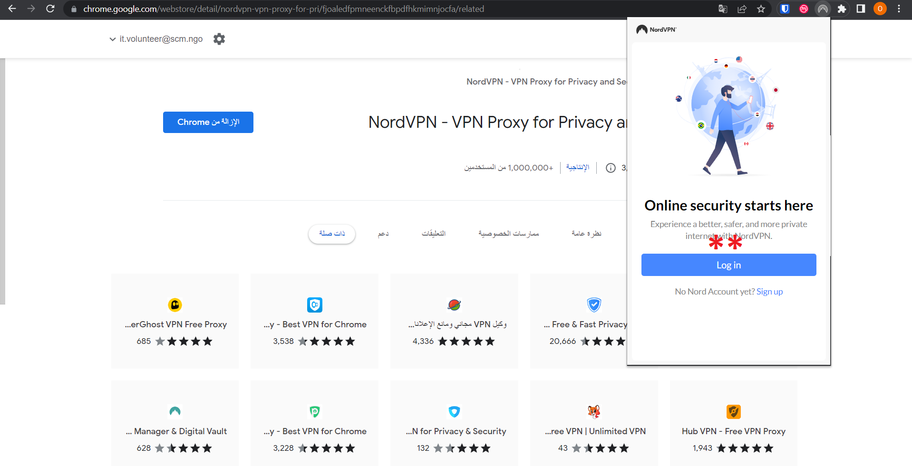
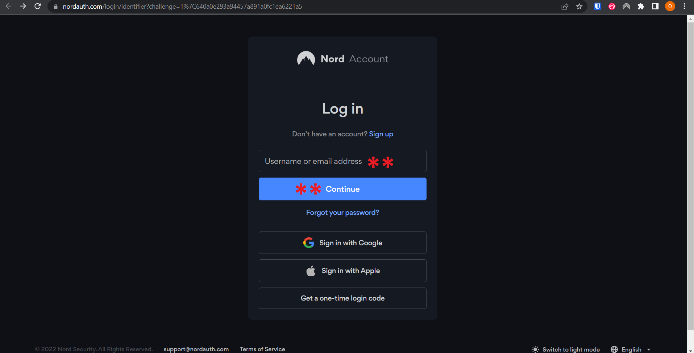
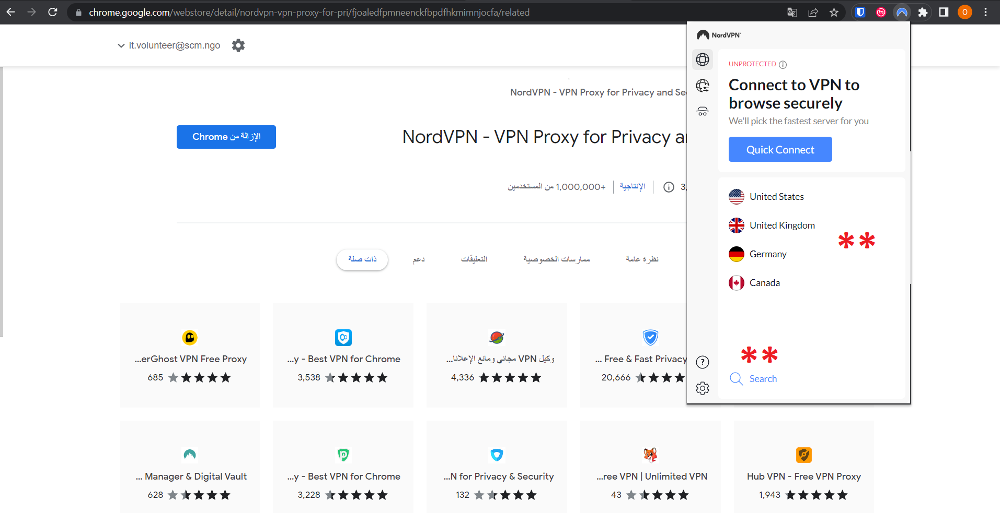
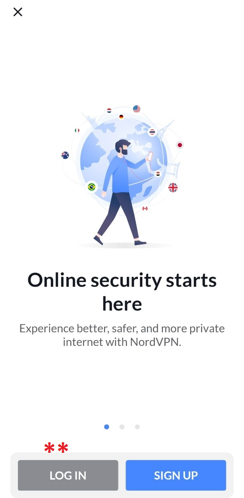
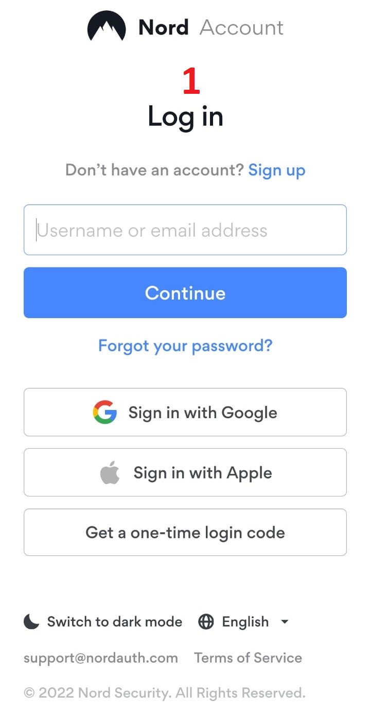
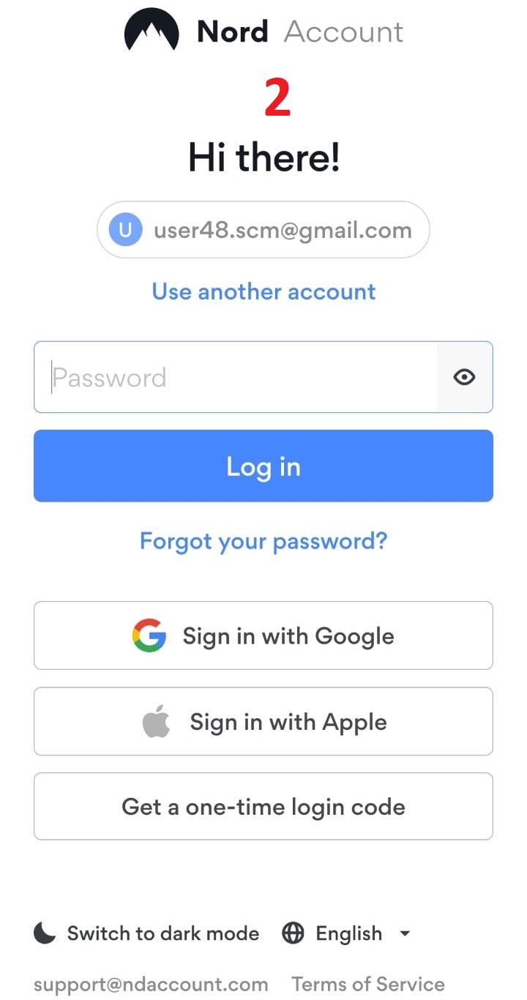

NordVPN || نورد في بي إن
الاسم: نورد في بي إن
المهمة: إنشاء اتصال شبكي محمي عند استخدام الشبكات العامة
أنظمة التشغيل التي يعمل عليها: ويندوز و ماك
الثمن: مجاني
كيف يعمل؟
يقوم البرنامج بإنشاء اتصال شبكي محمي عند استخدام الشبكات العامة و تشفير البيانات والمعلومات الخاصة بك على شبكة الانترنت و يقوم بإخفاء هويتك الإلكترونية
يتكون هذا الدليل من ثلاثة أقسام رئيسية :
1- إضافة نورد إلى المتصفح
- إضافة نورد إلى المتصفحات التالية: سوف نستخدم متصفح جوجل كروم في هذا الدليل، حيث يعتبر المتصفح الأكثر استخداماَ في الوقت الحالي.
- عند الضغط على الرابط السابق، تفتح الصفحة التالية، نقوم بالضغط على "إضافة إلى Chrome"
 -
تظهر النافذة التالية:
نضغط على "Add extension" لإضافة نورد إلى المتصفح
-
تظهر النافذة التالية وتعني أنه تم إضافة نورد إلى المتصفح بنجاح
 - نضغط مكان العلامة كما في الصورة لإضافة نورد إلى شريط المهام الخاص بالمتصفح 
- تظهر علامة نورد أو اللوجو الخاص به على شريط المهام بلون باهت، ويعني أنه غير مفعل، نقوم بالضغط على
اللوجو لتظهر النافذذة التالية: نقوم بالضغط على "Log in"
 - تظهر الصفحة التالية: نقوم بإدخال الإيميل الخاص بحساب نورد، ثم نضغط على "Continue".
نحصل على الإيميل عن طريق المركز السوري للإعلام وحرية التعبير
 - تظهر الصفحة التالية، نقوم بإدخال كلمة السر التي حصلنا عليها ثم نضغط على "Log in"
- بعد التسجيل بنجاح، نضغط على اللوجو الخاص بنورد لتظهر النافة التالية:
 - نضغط على إحدى البلدان الظاهرة في القائمة، أو نقوم بالبحث عن بلد معين لاستخدام السيرفر أو الخادم منها، يفضل استخدام بلدان أوروبا الشمالية أو الغربية
- بعد اختيار البلد واتمام الاتصال تظهر كلمة "Connected" باللون الأخضر وتعني أن الاتصال آمن وقيد التفعيل
2- استخدام نورد على أجهزة الموبايل
- لتحميل نورد على أجهزة الموبايل:
- نقوم بتحميل التطبيق، نفتحه فتظهر الصفحة التالية:
- نقوم بالضغط على "LOG IN" لتسجيل الدخول
 - تظهر الصفحة التالية:
- نقوم بإدخال الايميل ثم نضغط على "Continue"
- تظهر الصفحة التالية، نقوم بإدخال كلمة السر قم نضغط على "Log in"
  - عند إتمام تسجيل الدخول
- يقوم التطبيق بإعادتنا إلى الواجهة الرئيسية للبرنامج على أجهزة الموبايل، وهي
كالتالي:
- نسحب الشاشة السابقة لأعلى لتظهر خيارات البلدان
- نقوم باختيار بلد معين لاستخدام السيرفرات عن طريقه يفضل اختيار إحدى بلدان أوروبا الشمالة أو الغربية
- تظهر كلمة "Connecting"
-
وتعني أن التطبيق يقوم بالاتصال، عند اتمام الاتصال تظهر كلمة "Protected" أو "Connected"
باللون الأخضر وتعني أن الاتصال آمن وقيد التفعيل